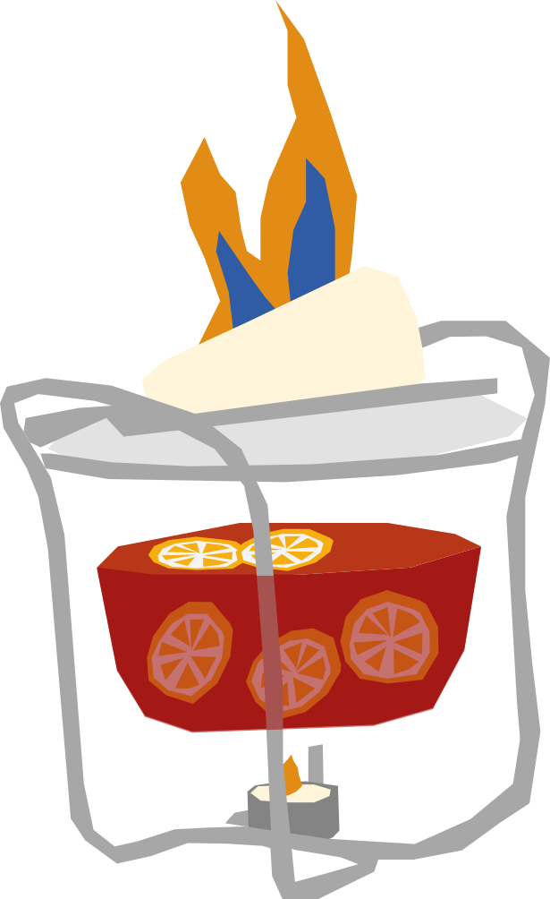

¿Lo puedes pronunciar?
Ponche navideño tradicional alemán del siglo XIX, muy popular en reuniones familiares de diciembre. Consiste en flambear un cono de azúcar (Zuckerhut) empapado en ron sobre una olla de vino caliente con especias, dejando caer el caramelo derretido gota a gota.
RECETA
- 250 ml vino tinto seco
- 30 ml ron oscuro
- 30 ml jugo de naranja
- 1/4 naranja
- 1/4 limón
- 1/2 rama de canela
- 1 clavo de olor
- 1/2 estrella de anís
- 1 trozo pequeño de azúcar en terrón
- Calienta el vino tinto con el jugo de naranja, las cáscaras de naranja y limón y las especias, sin dejar que hierva.
- Coloca el azúcar sobre una pinza para Feuerzangenbowle encima del vaso o recipiente y empápalo con un poco de ron.
- Enciende el ron con cuidado y deja que el azúcar caramelizado caiga sobre la bebida.
- Agrega el resto del ron poco a poco mientras el azúcar se derrite.
- Mezcla ligeramente antes de servir.
Vaso: Taza o vaso resistente al calor